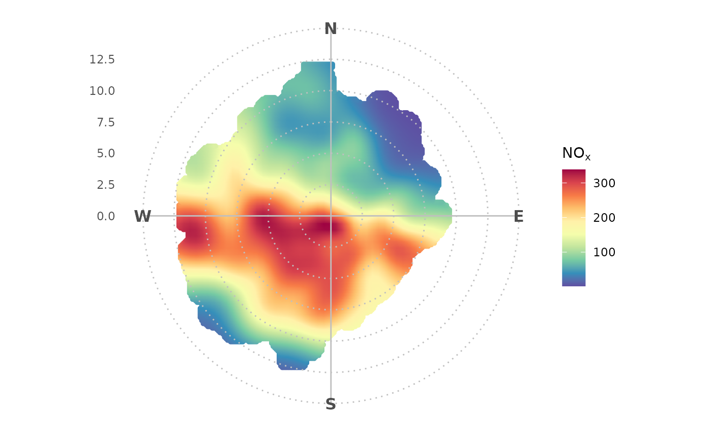
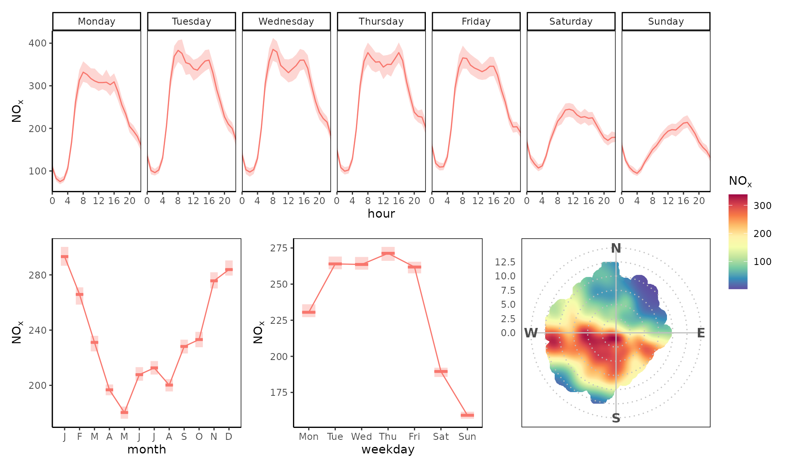
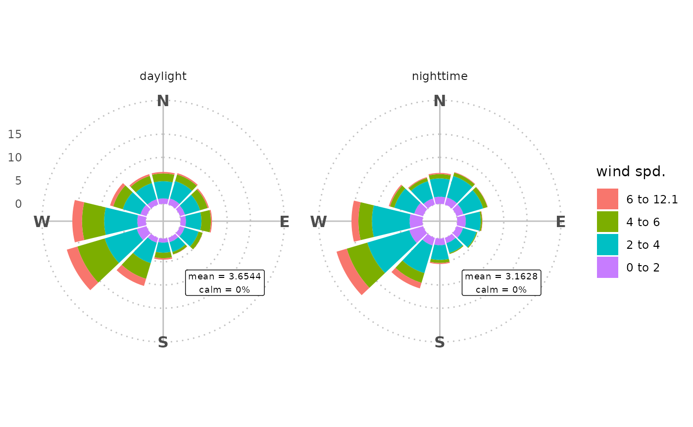
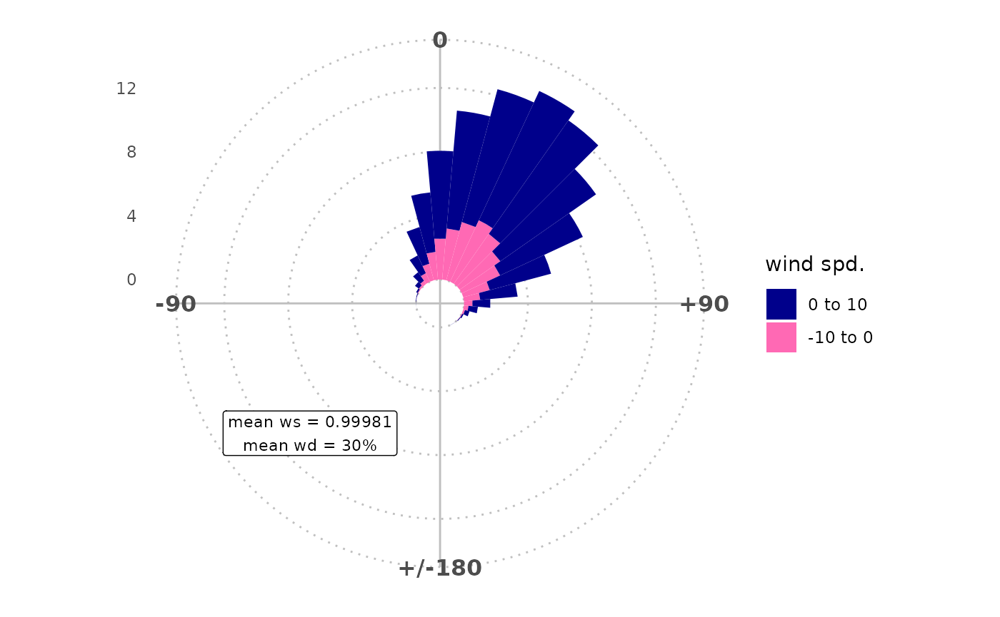

Polar Analysis
Examine the relationship between wind speed, wind direction and pollutant concentrations.
ggopenair-polar.RmdIntroduction
An openair polar plot looks like this:
openair::polarPlot(ggopenair::marylebone)To achieve the same result in ggopenair one would write:
library(ggopenair)
library(ggplot2)
polar_plot(marylebone, "nox") +
theme_polar() +
scale_opencolours_c()
This is more long winded, but the flexibility allows users to customise their outputs very closely. For example:
Scales
Use any ggplot2 scale function to change how the plot
behaves. For example, use scale_color_binned() to bin the
colour bar.
polar_plot(marylebone, "nox") +
theme_polar() +
scale_color_steps(
low = "black",
high = "goldenrod",
breaks = seq(0, 1000, 40)
)Alternatively, one could use the “trans” argument to shift the colour
scale. This could be particularly useful for polar_freq(),
which had its own “trans” argument in openair.
shift_axis <- function(trans) {
polar_freq(marylebone, "nox") +
theme_polar() +
scale_fill_gradientn(
colours = c("darkgreen", "hotpink"),
trans = trans
) +
labs(title = trans)
}
patchwork::wrap_plots(
shift_axis("identity"),
shift_axis("sqrt"),
shift_axis("log10")
)Annotations
Use annotate() to easily draw on your polar plots and to
draw attention to certain aspects. In-built annotation functions make it
easy to, for example, draw a highlighting wedge or direct axis
labels.
polar_plot(marylebone, "nox") +
theme_polar() +
scale_opencolours_c("inferno") +
annotate_polar_wedge("S", "W") +
annotate_polar_axis(seq(5, 15, 5), color = "grey50")Extensions
Use any of the ggplot2 extension packages out there,
such as patchwork. For example, a polar plot could be
inserted into a time variation plot.
library(patchwork)
polar <-
polar_plot(marylebone, "nox") +
theme_polar() +
theme(panel.border = element_rect(fill = NA, color = "black")) +
scale_opencolours_c()
tv <- trend_variation(marylebone, "nox", return = "list")
tv <-
purrr::map(
tv,
~ .x + theme_classic() + theme(
legend.position = "none",
panel.border = element_rect(fill = NA)
)
)
tv$day_hour / (tv$month | tv$day | polar) +
plot_layout(heights = c(.8, 1), guides = "collect")
Other Polar Plots
Currently the main eight openair polar plots have been implemented in ggopenair.
polarplot <-
polar_plot(marylebone, "nox") + theme_polar() + scale_opencolours_c()
polarannulus <-
polar_annulus(marylebone, "nox") + theme_polar() + scale_opencolours_c()
polarfreq <-
polar_freq(marylebone, "nox") + theme_polar() + scale_opencolours_c(trans = "sqrt")
polarperc <-
rose_percentile(marylebone, "nox") + theme_polar() + scale_opencolors_d()
#> Warning: Returning more (or less) than 1 row per `summarise()` group was deprecated in
#> dplyr 1.1.0.
#> ℹ Please use `reframe()` instead.
#> ℹ When switching from `summarise()` to `reframe()`, remember that `reframe()`
#> always returns an ungrouped data frame and adjust accordingly.
#> ℹ The deprecated feature was likely used in the openair package.
#> Please report the issue at <https://github.com/davidcarslaw/openair/issues>.
#> This warning is displayed once every 8 hours.
#> Call `lifecycle::last_lifecycle_warnings()` to see where this warning was
#> generated.
pollrose <-
rose_pollution(marylebone, "nox") + theme_polar(panel_ontop = FALSE) + scale_opencolors_d()
rose_wind <-
rose_wind(marylebone) + theme_polar(panel_ontop = FALSE) + scale_opencolors_d()
patchwork::wrap_plots(polarplot, polarannulus, polarfreq, polarperc, pollrose, rose_wind, nrow = 3)Note that polar_diff() and polar_cluster()
have been developed, but aren’t shown here.
The Three Roses
Note that two of the above “roses” - wind and pollution - have their
own annotation functions to put on their. The rose_angle
arguments are required if you change the angle argument of
wind/rose_pollution due to the way geom_col() interacts
with coord_polar() — simply copy the chosen argument for
angle and it’ll fix any strangeness when wd is
near 0/North.
rose_wind(marylebone, facet = "daylight") +
theme_polar(panel_ontop = FALSE) +
annotate_rose_text(y = 15, wd = "SE", size = 2.5)
The functionality to compare two sets of ws/wd data felt a bit
misplaced in pollutionRose(), so ggopenair
exports a separate rose_metbias() function. This also lets
the plot better reflect what it is actually representing (no more
N/S/E/W axis labels).
mydata <- dplyr::mutate(marylebone,
ws2 = ws + 2 * rnorm(nrow(marylebone)) + 1,
wd2 = wd + 30 * rnorm(nrow(marylebone)) + 30
)
## need to correct negative wd
id <- which(mydata$wd2 < 0)
mydata$wd2[id] <- mydata$wd2[id] + 360
## results show postive bias in wd and ws
rose_metbias(
mydata,
ws = "ws",
wd = "wd",
ws2 = "ws2",
wd2 = "wd2"
) +
theme_polar(panel_ontop = FALSE) +
scale_fill_manual(values = c("darkblue", "hotpink")) +
annotate_rose_text(wd = "SW", y = 10, rose_angle = 10)